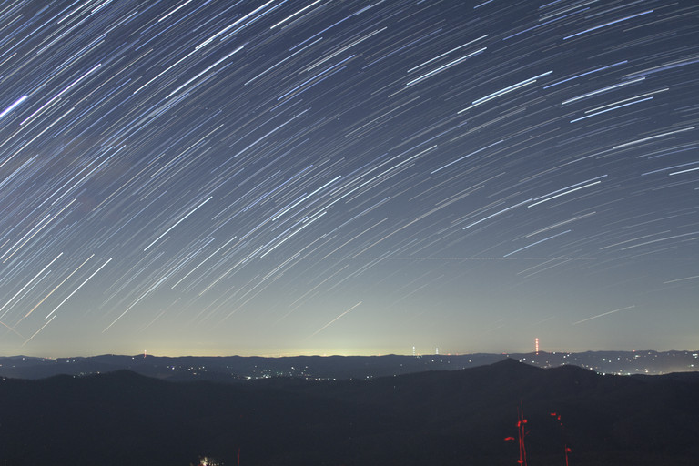

This is the Data Visualization section of the website where I go through my currently 2 different data graphs and explain what they are and how they are used. Simply Scroll down and read for more information! My visualizations are all about COMETS! Or are they aliens??? Either way We are here in the interest of everyting large and small in space.
The API used to get my data is NASA's Open API called Asteroids - NeoWs. Basically this API tracks any objects that are near our planet and gatheres a bunch of different data on each object. Data such as its diameter, velocity, mass and much more! With all of this information I was able to create a bar graph that shows the year the object was detected on the X axis and the approximate diameter of the object on the Y axis. This was quite interesting because creating the visuaization made me realise the differences in how large and small some of the asteroids were!
The second visualization is more interesting than the first. The second visualization uses the data of the objects relative velocity and the estimated velocity. My goal with this was to see if there was a relationship between the 2 in any way. Turns out I think there might be! With the data from NASA's API and thanks to my graphic, It seems like the smaller an objects diameter is, the faster it gains relative velocity per second.
This data visualization is a much more fun way to represent data. This bubble chart is interactive! When you hover over each bubble it displays the comets diameter and speed. The bubbles themselves are sorted with simulation forces and their size is correlated to their comets diameter.
So those were pretty cool right? Although those are probably just space rocks that have been flying for years and years its quite crazy to think that many of them werent far off from hitting earth. A small rock of 3 metres travelling at 20 km/s would do a lot of damage if it hit anywhere near a city. But atleast these rocks provide us humans with the satifactory view of a meteor shower where we make a wish.
